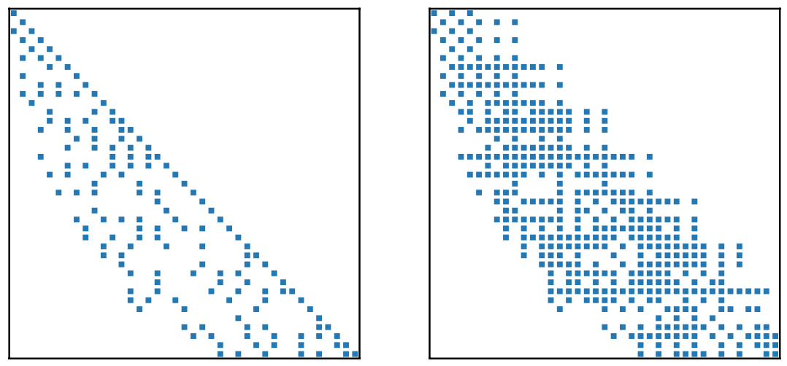
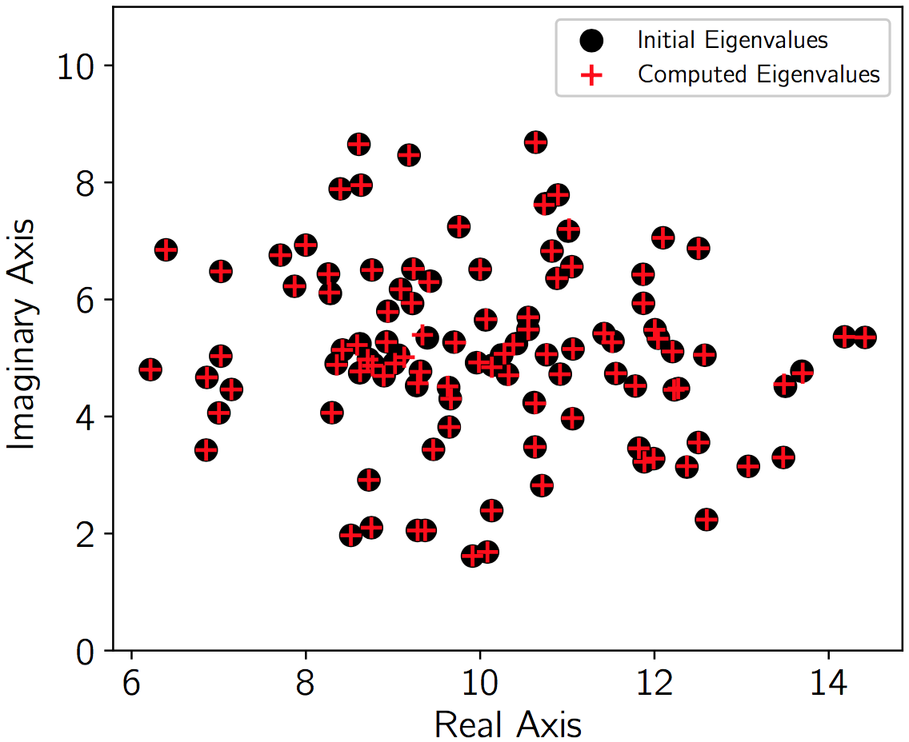

|
SMG2S
Sparse Matrix Generator with Given Spectrum
|


|
|
SMG2S
Sparse Matrix Generator with Given Spectrum
|
|
Sparse Matrix Generator with Given Spectrum
In the newest version (v1.1) of SMG2S, it supports the generation of nonsymmetric matrices that all the entries of matrices are real and the eigenvalues can be both real and complex.
Author Xinzhe Wu @ Maison de la Simulation, France.
SMG2S is able to generate large-scale non-Hermitian (non-Symmetric) methods in parallel with the spectral distribution functions or eigenvalues given by users. SMG2S can be used to benchmark the iterative linear and eigen solvers on supercomputers using the generated very large test matrices with customized spectral properties.

Website of SMG2S is here, Developing repository is on Github.
Documentation is avaiable.
Python version is avaiable on Pypi, which can be installed by the command:
In the main directory:
Install
Execution
If ${GIVEN_SPECTRUM_FILE} is not given, SMG2S will use the internal eigenvalue generation method to generate a default spectrum.
If ${MATTYPE} is not given, SMG2S will generate the non-Hermitian matrices. If the users want to generate non symmetric matrices, it should be set as "non-sym".
Below are the complete definitions of commandline parser for it:
Install the binary file and includes files into ${INSTALL_DIRECTORY}
Include the SMG2S header file
Include and Compile
Include header file
Generate the Nilpotent Matrix for operation:
Create the parallel Sparse Matrix Object Mt:
Generate a new matrix:
For generating non symmetric matrices with complex eigenvalues, the first typename in the template of can only be double or float.
For the complex values, the given spectrum is stored in three columns, the first column is the coordinates, the second column is the real part of complex values, and the third column is the imaginary part of complex values.
%%MatrixMarket matrix coordinate complex general 3 3 3 1 10 6.5154 2 10.6288 3.4790 3 10.7621 5.0540
For the real values, the given spectrum is stored in two columns, the first column is the coordinates, the second column is related values.
%%MatrixMarket matrix coordinate real general 3 3 1 10 2 10.6288 3 10.7621
In order to generate non-Symmetric test matrices with given complex and real eigenvalues, the give spectrum are always stored in complex form, which has three columns.
For the non-Symmetric test matrices, if one eigenvalue is complex, there exits another value that they two are symmetric to the real axis in the real-imaginary plain. So when setting up the spectral file, one eigenvalue a+bi should be closely followed by another eigenvalue a-bi. For the real eigenvalues, they are stored with their imaginary part being 0. Here is an example
%%MatrixMarket matrix coordinate complex general 9 9 9 1 10.6288 -3.4790 2 10.6288 3.4790 3 2.332 0 4 10.7621 5.0540 5 10.7621 -5.0540 6 -2.332 0 7 -11.02 0 8 21.21 4.4 9 21.21 -4.4
The cmake will check if PETSc is installed in the platfrom, if yes, header file to interface will also be copied to ${INSTALL_DIRECTORY}/include when installing SMG2S.
Include header file
Create parMatrixSparse type matrix
Restore this matrix into CSR format
Create PETSc MAT type
Convert to PETSc MAT format
More information: PETSc GMRES example and PETSc Arnoldi example
Generate the shared library and install the python module of smg2s
Before the utilisation, make sure that mpi4py installed.
A little example of usge:
The make install command will generate a shared library libsmg2s2c.so into ${INSTALL_DIRECTORY}/lib. It can be used to profit the C wrapper of SMG2S.
The compile command:
A basic example of usge:

 1.8.17
1.8.17